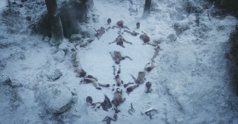
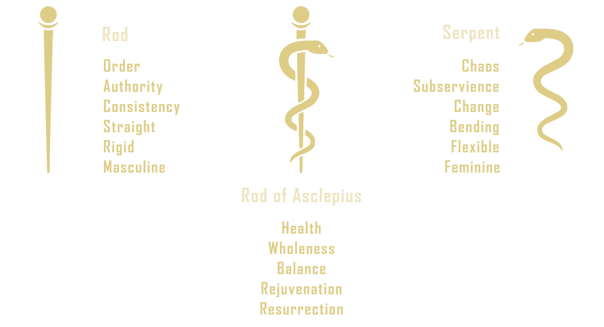

INTRODUCTION
To those on the outside I speak only in parables
that they are ever seeing but never perceiving
and ever hearing but never understanding
lest at any moment they would turn and be forgiven.
The following is an analysis of the HBO series, Game of Thrones. It is not a critique. It does not concern technical aspects of film-making nor storytelling, but rather pries up the planks of a symbol-rich epic to uncover a possible import on the presumption that Game of Thrones is, at its core, a religious parable, a philosophical discourse in entertaining disguise.
It must be made clear that no specific religion, dogma, or philosophy is held here to provide sole contextual province in which symbols of the story are to be interpreted, nor does there need to be one--unless we count all the world's religions as one. On the supposition that the God of this Universe has many faces, this analysis will draw from a palette of the world's sacred texts, myths, and symbols in their service to paint a single coherent picture.
The Mysteries
...this is the remembrance of those things which our soul once saw while following God when, regardless of that which we now call being, (our soul) raised her head up towards the true being. And therefore the mind of the philosopher alone has wings; and this is just, for he is always, according to the measure of his abilities, clinging in remembrance to those things in which God abides, and in beholding which He is what He is. And he who employs aright these memories is ever being initiated into perfect mysteries and alone becomes truly perfect. But, as he forgets earthly interests and is rapt in the divine, the vulgar deem him mad, and rebuke him; they do not see that he is inspired.
--Socrates, PhaedrusOne subject relevant to an analysis of this kind is the subject of religious mysteries. A Mystery Religion is a cult or religion which employs symbols, rituals, and/or allegories, i.e. "mysteries" to dispense spiritual teachings in a way obscured where only an initiated few know the meanings of them. Parables such as those used by Jesus in the gospels fit into this category, but so also do rites such as baptism, communion, marriage and the symbol of Christianity itself, the cross.
...we speak wisdom among them that are perfect: yet not the wisdom of this world, nor of the princes of this world, that come to nought: But we speak the wisdom of God in a mystery, even the hidden wisdom, which God ordained before the world unto our glory:
--1 Corinthians 2: 6-7Even if in principle and practice they exist(ed) elsewhere, the Mystery Religions are typically associated with the Greco-Roman world as it was from ancient Greece and its myriad initiatory cults such as the Eleusinian, Orphic, and Bacchic Mysteries that 'mystery' and its related words, 'mystic' and 'mysticism' originate. Though it would be contentious to call it a mystery religion, rites of initiation and the employment of mysteries persisted into Christianity as is seen in the Seven Sacred Mysteries of the Eastern Orthodox Church and the Mysteries of the Rosary of Roman Catholicism. Of course, the idea of esoteric knowledge possessed by an intimate few and expressed to the public in arcane symbolism is illustrated by Jesus himself in a section of the Gospels of Matthew, Mark, and Luke known as the 'Parable of the Sower'. After explaining to his disciples the meaning of the parable, he answer's their question about why he speaks to people in parables in a way as mysterious:
He answered and said unto them, Because it is given unto you to know the mysteries of the kingdom of heaven, but to them it is not given. For whosoever hath, to him shall be given, and he shall have more abundance: but whosoever hath not, from him shall be taken away even that he hath. Therefore speak I to them in parables: because they seeing see not; and hearing they hear not, neither do they understand.
(...)For this people's heart is waxed gross, and their ears are dull of hearing, and their eyes they have closed; lest at any time they should see with their eyes, and hear with their ears, and should understand with their heart, and should be converted, and I should heal them.
--Matt 13If we take as a given that Jesus here is one with God, one implication is that God's mysteries are anywhere and everywhere around us, for if Jesus speaks in parables, does God not also? Could it be that Nature is ripe with symbolic meaning and Man in his mindless ways may reveal more than the wisdom of babes without meaning to?
In the Eleusinian Mysteries of ancient Greece, the changing of the seasons was put to work within the myth foundational to initiatory rites, aka the initiation myth--a story which, being contemplated, helped to induce a spiritual evolution in initiates. In this case, the myth was of the Universal Mother, known in Eleusis and elsewhere as Demeter, and her daughter--at first called Kore (maiden) until she was abducted by Hades, king of the underworld, and became his wife--thenceforth known as Persephone. In her grief and wrath, Demeter caused vegetation to stop growing. To appease her, Hades consented to let Persephone return to life for 6 months out of the year. When Demeter is reunited with her daughter, she grants life to return to the world in a period of the year we call Spring.
In Eleusis, at Spring's arrival, a sequence of rites in the cult of Demeter known as the Lesser Mysteries, rites of purification and preparation open to the public, were performed. Later in the year around the Autumn Equinox, when Persephone returned to the underworld, those who had been initiated would participate in the Greater Mysteries which were done in private and disclosure of what took place there was forbidden and punishable by death.
For some, this myth is nothing more than an ignorant explanation for the changing of the seasons, for others it is an allegory about reincarnation or the immortality of the soul. In any case, it was the subject of rites which were meant to induce a mystical experience, meaning that, like the stuff of dreams, the changing of the seasons and other elements of the myth serve a symbolic function. In other words, the myth is part of the mystery.
Evidence for the idea that elements of Game of Thrones serve this same function is that elements of the show are given symbolic meaning within the show itself. One example is the equation of Winter with Death in Arya's statement "Winter came for House Frey". Another is Daenerys's vision in the House of the Undying where the Wall is put to parabolic use giving us a sequence that can be interpreted to predict her fate:
1. Daenerys will reach the Iron Throne
2. Then cross a threshold
3. To join the dead
Of course, it can't be said with any certainty what the intentions of George R. R. Martin were when writing the series of novels the show is based on, nor how closely the creators of the show adhered to those intentions. However, analyzing a story does not mean entirely to surmise the author's intent. Indeed, when interpreting dreams we don't claim to know what the dreamer meant, only what the dream means.
Interpretation of Signs
When it comes to discussions on metaphysical or abstract concepts, the tools used are symbol and metaphor. For example, the idea of right, as in "We must do what is right." is expressed in language using the metaphor of straightness. The word "right" itself derives from an ancient Proto-Indo-European root which means "to move in a straight line." or "to direct in a straight line." From the same root comes words such as correct, erect, direct, regal, and ruler. Not coincidentally, the word "wrong" comes from a root meaning "bent," and to call someone "crooked" is to say they are evil.
This metaphorical link between straight--right and bent--wrong can be found in languages from around the world. In Chinese for example, there is
- 正 (Zhèng): positive, upright, straight, correct, just
- 曲 (qū): song, yeast, bent, crooked, crook, wrong
Despite having here an association which appears to transcend cultural boundaries, can we say then that straight means right or make assumptions about what it means any time we see a straight line in a work of art? It does not seem prudent.
Bran: Heard some of the men talking about the comet. Say it's an omen, say it means
Robb will win a great victory in the South.
Osha: Did they? I heard some other fools say it's Lannister red. Means the Lannisters
will rule all 7 kingdoms before long. Heard a stable boy say it's the color of blood
to mark the death of your father. The stars don't fall for men. That comet means one thing, boy,
dragons.
This problem of interpreting signs is one harped on over and again in the very story we are here going to interpret. But, is it a point of Game of Thrones that we shouldn't interpret signs at all, or that we should, and we should be careful when we do?
In one of the very first scenes of the show we see a slain direwolf, the sigil of House Stark, killed by a stag, sigil of House Baratheon. Five wolf pups are at first discovered next to the carcass and Jon Snow deduces that the 5 Stark children were "meant to have them." In other words, it as a sign, or even Divine Intervention. Is it?
Those who have no knowledge say, “If only Allah would speak to us or a sign would come to us!” The same was said by those who came before. Their hearts are all alike. Indeed, We have made the signs clear for people of sure faith.
--the Qu'ran, Ch. 45 ayah 13As for the direwolf being gored by the stag, it has been written of this that it is foreshadwing, the author's way of cluing the audience in on future events, but it leaves the question: if it serves as foreshadowing for the audience, should it not also be taken as foreshadowing for the Starks? Is it not an omen? If so, what does it say about the world the story is set in and the forces at play? If anything, does it not say the Starks should have been paying attention, they should have been reading the signs?
One Symbol to Rule Them All

Symbol of a Divine Relationship
If we had to say Game of Thrones is about ONE thing, we would have to say it is about POWER or what it means to be a good RULER (a good ruler has a straight edge). But we have to say, at the least, Game of Thrones is about two things: FIRE and ICE. This much is evident in the title of the book series the show is based on: 'A Song of Ice and Fire'.
While this is not an analysis of the book series (that may come later) the title is a clue and our foremost use of symbolism, for, unless we are to assume the main characters of the story are two mindless elements, it is a sign that this duality is principle and should serve as a guide for any interpretation. From the title we might guess that the story is about a contrast, a juxtaposition, or even a clash of antipodal pairs. Fire and Ice do seem naturally inimical neighbors, two which cannot cohabit the same place. It does seem thus that conflict is inherent or inevitable in the story, but most stories are about the resolution of conflict, internal or external, whether through war or through love.
It seems hardly a coincidence that in the very first overtly displayed symbol of the show (pictured above) we see a symbol that approximates a bisected circle, or at least, we can say, two equal but opposite halves of a whole, united, a picture of marriage, but possibly another relationship.
As Above, So Below
The symbol in question bears an uncanny resemblance to the Greek letter Phi. Phi is used as a symbol for Philosophy, but what makes it more significant in this context is the numerical ratio with which it is associated, a relationship which has garnered it names such as the 'Divine Proportion' and 'Golden Ratio'.
This ratio, 1.618... to 1 was known as early as the days of the ancient Greek mathematician, Euclid, and said to have been used in Greek architecture and art, though it was not associated with the Greek letter then, and it may not have had its apotheosis until the Renaissance and the publication of a book in 1509 called 'De Divina Proportione' (On The Divine Proportion) by Luca Pacioli. For Pacioli, in simplest terms, the qualities that make phi divine are its:
- Simplicity
- Resemblance to the Trinity
- Irrationality
- Self-similarity
- Link with the Quintessence (Fifth Element) via its prevalence in a dodecahedron
What seems most likely to have earned phi the right to be deemed divine is the unique relationship of the ratio Φ:1 to the sum of its parts and the religious tenet this uniquely expresses. Dividing a line at a ratio of Φ:1 yields a line where the proportion of the smaller part (1) to the larger (Φ) is the same as the larger to the whole (Φ+1). (Φ + 1) / Φ = Φ. This 'self-similarity', as Pacioli calls it, reflects religious ideas about the relationship between Heaven and Earth, God and Mankind, or more appropriately called here: Macrocosm and Microcosm . The idea can be found in the Bible with a prying eye, but it became more pronounced in the Renaissance with the infusion of Alchemy and Hermeticism into Europe. It is, after all, the second of the Seven Hermetic Principles, the principle of correspondence, aka 'As Above, So Below', the idea that from high to low, large to small, certain patterns repeat. For Hermeticists, this means the Known is a way to grasp the Unknown--the basic idea behind religious parables.
Aligned with the correspondence principle, phi could simply be taken as a sign that the story is a parable, that it signifies that what follows is an image of something else. For, again, this is how a parable works: using one thing, e.g. a grain of mustard seed, to describe another, The Kingdom of Heaven . However, it is not the claim of this analysis that the relationship between Fire and Ice is parabolic, yet the principle of correspondence still has a part to play in formulating the claim to come.
Death Is Coming
Another Greek letter, theta, like phi has been used for various purposes in math, but the most relevant use of theta here is as an abbreviation by the Greeks for 'thanatos' (death). As with many aspects of life, the Greeks were known to personify death in myth, and among the Orphic hymns is one forThanatos. Of course, death is arguably the main character of Game of Thrones, though it would be more agreeable to say death is the antagonist.
"Death is the first enemy and the last."
--Beric DondarrionIt will be explored further in the analysis, but simply pointed out here that in religion there is more than one kind of death. Indeed, many religions speak of a rebirth, metamorphosis, or transmutation which necessitates a kind of death in the way we might say a caterpillar dies when it becomes a butterfly. So the statement is attributed to the prophet Mohammed, "Die before you die." In a similar vein, Maester Aemon tells Jon Snow in Game of Thrones "Kill the boy. Let the man be born." This is a recurring theme in the show.
Midway through the series we see Sansa Stark wearing a pendant in the shape of the symbol in question though it has been turned so that the bisecting line is horizontal like in the letter theta. Besides the new jewelry, Sansa's unusually dark presentation and the feathers on her shoulders liken her to a raven or crow, a bird considered a herald of death and a symbol of the first stage of transmutation in Alchemy called 'the blackening' (nigredo), a psychic death of the Alchemist. In this symbolism, which will be deeper dug into later, we could interpret this to mean that Sansa has begun the process of transmutation, her young naive self in a state of decomposition and decay, making way for a new Sansa to rise from the dead little bird.
The Golden Mean
The Golden Ratio we just discussed is often conflated with the Golden Mean, though it appears to be a separate concept entirely. Because it is one of the themes of Game of Thrones and is related to another interpretation of our symbol in question, the Golden Mean is given a brief introduction here.
The term Golden Mean refers to a concept common among the world's religions and philosophies which can be summed simply as "the virtuous mean between two extremes" or "all things in moderation". Put another way we could say: there is a time to kill, and a time to heal, a time to embrace, and a time to refrain from embracing ***. It is for this concept that Buddhism is called " the Middle Way" for the Buddha taught that the way to Enlightenment lay between the two extremes of self-indulgence and self-denial.
(...)if any one gives too great a power to anything, too large a sail to a vessel, too much food to the body, too much authority to the mind, and does not observe the mean, everything is overthrown, and, in the wantonness of excess, runs in the one case to disorders, and in the other to injustice, which is the child of excess. I mean to say, my dear friends, that there is no soul of man, young and irresponsible, who will be able to sustain the temptation of arbitrary power—no one who will not, under such circumstances, become filled with folly, that worst of diseases, and be hated by his nearest and dearest friends: when this happens his kingdom is undermined, and all his power vanishes from him. And great legislators who know the mean should take heed of the danger.
--Book III of Plato's LawsHear me, then: there are two mother forms of states from which the rest may be truly said to be derived; and one of them may be called monarchy and the other democracy: the Persians have the highest form of the one, and we (the Athenians) of the other; almost all the rest, as I was saying, are variations of these. Now, if you are to have liberty and the combination of friendship with wisdom, you must have both these forms of government in a measure; the argument emphatically declares that no city can be well governed which is not made up of both.
--Book III of Plato's LawsA Song of Salt
Another interpretation of the symbol is that it is the Alchemical symbol for salt. Alchemy is not just an ancient precursor of chemistry, but chemistry nestled within the belief that the universe is God's Book, its signs are everywhere, and among these, few are as sanctified as salt. Although the Alchemical symbol for saltpeter (🜕) is a better fit, it is what salts in general symbolize that concerns us. Like phi, salts have a quality that might be deemed divine. While phi shows the likeness between Heaven and Earth, salts show the union of the two.
In Western Alchemy, salts were seen to symbolize the "union of opposites" an idea apparent in a bisected circle.
In addition to the salvific (derived from Latin sal = salt) qualities of some salts, this made them
religiously significant
as a sign of balance, wholeness, prosperity, and wisdom.
This link between salt and the union comes from the fact that salts are formed from the marriage
of an acid and a base.
The pH Scale
Acids and Bases are, of course, opposites--they neutralize when united. So, salts don't only symbolize two coming together as one, but also the stability or harmony that results from the union.
The Union of Opposites
Table salt, for example, is composed of two highly reactive elements, sodium (Na) and chlorine (Cl). When they come together as an acid (HCl) and a base (NaOH) they not only neutralize but together form a happily married couple (NaCl) highly prized in the ancient world as a disinfectant, a seasoning, and preservative for keeping foods from going to ruin.
You are the salt of the Earth.
--Jesus speaking to his disciples. Matt. 5:13The symbolic significance of common table salt (perhaps salts in general) is found in a variety of religions in the area of the Mediterrean including the religions of Rome and Greece, Judaism, and Christianity, often used in rituals involving purification as in the Book of Ezekiel. Being linked with unity, salt was also offered as a sign of trust or hospitality at gatherings.
Robb and Catelyn Stark are given a symbolic offering of bread and salt by Walder Frey as an observance of Guest Rights, a sign of trust.Two elements which stir up an implacable enmity between themselves are found in wondrous alliance in salt. For salt is wholly fire and wholly water.
-- Carl Jung quoting a 17th century author, Fillipo Picinelli , in Mysterium ConiunctionisSalt is born from the purest parents, the sun and the sea.
--PythagorasIn Eastern and Western Alchemy, the first and foremost of opposites are the universal masculine and feminine principles, the primordial pair whose copulation engendered the universe. Though gendered, these two are not bodied beings with reproductive organs. Described as formless, they are ascribed gender because of their opposing attributes and so have been represented by or linked with a variety of contrasting pairs. Among those are:

| Masculine | Feminine |
|---|---|
| Heaven | Earth |
| Soul | Body |
| Fire | Water |
| △ | ▽ |
| Sun | Moon |
| Gold | Silver |
| Red King | White Queen |
The Red King and the White Queen
Given the knowledge that George R.R. Martin's story is based partly on the Wars of the Roses, a decades long war in England between the Houses of York and Lancaster, we might have guessed that Game of Thrones would end the way the Wars of the Roses ended--with a wedding.
With Henry Tudor's ascension to the throne and his marriage to Elizabeth of York, the conflict and instability in England came to an end. Henry's ancestry made him a claimant for the throne from the Lancastrian side. So, like the neutralizing effect of compounding acids and bases, the effective union of the two opposing houses into the House of Tudor opened the Tudor Dynasty into an era peace and prosperity.

The Wars of the Roses were not called such at the time of the warring, and accounts conflict on whether the Lancasters and Yorks actually used the red and white roses above as emblems of their houses. There is reason to believe this was a bit of propaganda added later meant to fit with Alchemical symbolism, but this is not the place to make further argument for that. There seems consensus though the Tudor rose was created by Henry VII (Duke of Richmond) to symbolize the union of the two houses. We see congruence with this in Shakespeare's final verses of Richard III, the last in a series of plays concerning the same wars we are discussing.
Proclaim a pardon to the soldiers fled
That in submission will return to us.
And then, as we have ta’en the sacrament,
We will unite the white rose and the red;
Smile heaven upon this fair conjunction,
That long have frowned upon their enmity.
What traitor hears me and says not “Amen”?
England hath long been mad and scarred herself:
The brother blindly shed the brother’s blood;
The father rashly slaughtered his own son;
The son, compelled, been butcher to the sire.
All this divided York and Lancaster,
Divided in their dire division.
O, now let Richmond and Elizabeth,
The true succeeders of each royal house,
By God’s fair ordinance conjoin together,
And let their heirs, God, if Thy will be so,
Enrich the time to come with smooth-faced peace,
With smiling plenty and fair prosperous days.
Abate the edge of traitors, gracious Lord,
That would reduce these bloody days again
And make poor England weep in streams of blood.
Let them not live to taste this land’s increase,
That would with treason wound this fair land’s peace.
Now civil wounds are stopped, peace lives again.
That she may long live here, God say amen.
Of course, we see no such marriage in Game of Thrones, and marriages or proposals which fit well into the symbolism outlined above, Joffrey and Sansa, Drogo and Daenerys, like others in the story, seem to make a case against marriage. Does this mean there is no hope for Fire and Ice, that their eternal swirling dance is to only ever be a bloody tempest of war and strife? Not if we consider a marriage of another kind.
My husband is my king, and my king is my husband.
--Margaery TyrellThe Claim
Whether the symbol above is Phi, Theta, Salt, or something else, the claim of this analysis is the same: Game of Thrones is about a Divine Relationship. Fire and Ice as the subject of Martin's book are the couple concerned.
Fire and Water were conceived of as opposites and symbols for primordial principles for millennia past. That Martin gives us frozen water as a symbol, doesn't only make the two more extreme opposites, but is a clue that the story concerns a transformation, a melting of the Ice--if we assume that the story ends with a union.
At last, the story does end with husband and wife coming together, but it is not two people conjoining as one flesh, but a war-torn kingdom finally accepting her true king, the suitor who spoke to her in parables while she kept a wall up between them for fear of death. Death came to her anyways, but in a way that allowed her to be born again. As a parable this corresponds to a reconciliation and a reunion between what struggles within the limits of the human mind, and what lies beyond.